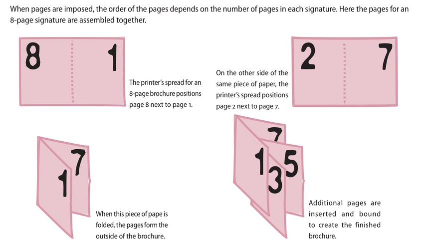
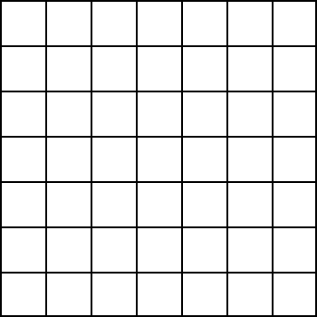

1 Bases de données
1.1 Vocabulaire
| Français | English |
|---|---|
| aborder (un sujet) | to tackle |
| accomplir | to achieve |
| à distance | remote |
| agité, qui ne prend jamais de répit | restless |
| à haute criminalité | crime-ridden |
| ajouter | to add |
| à l’aube de | on the eve of |
| aller chercher, atteindre | to fetch |
| allonger | to lengthen |
| amadouer | to schmooze |
| approfondir | to deepen |
| a ridge | une crête |
| arrogant | overbearing |
| a sample | un échantillon |
| assaillir | to beset |
| atroce, ou criard | lurid |
| attendre de qn que… | to expect sb to |
| attendre qqch de qn | to expect sb to do stg |
| audacieux | bold |
| au-delà de | beyond |
| au lieu de | instead of |
| au moins | at least |
| au premier plan | in the foreground |
| authentique | genuine |
| avaler | to swallow |
| avant | prior to |
| avare | miserly |
| biaisé, partial | biassed |
| bien que | although |
| brouillard | fog |
| brume | mist |
| cahoteux, accidenté | bumpy |
| caracoler | to prance |
| cassant, fragile | brittle |
| cautionner | to endorse |
| célèbre | famous |
| ce qui est produit, ce qui sort | the output |
| changer, transférer | to shift |
| chaos | mayhem |
| chercher | to watch for |
| cinglant | searing |
| clocher | steeple |
| comestible | edible |
| comme si | though |
| concret | hands-on |
| confiance (en soi) | confidence |
| contempler, regarder fixement | to gaze at |
| convaincre qn de dépenser plus | to upsell |
| couper | to trim |
| cuire au four | to bake |
| cupide | greedy |
| d’actualité | topical |
| d’après, selon | according to |
| d’avant, ancien | former |
| déchiqueter, réduire en lambeaux | to shred |
| décoller | to take off |
| défigurer | to deface |
| dentelle | lace |
| dépeindre | to depict |
| dépenser | to spend |
| derrière | behind |
| des honoraires, des frais | fees |
| désirer ardemment | to crave |
| destinataire, récipiendaire | a recipient |
| détaché | unmoored |
| détruire, faire disparaître | to wipe out |
| deviner | to guess |
| diffuser, retransmettre | to broadcast* |
| diffuser | to broadcast |
| dilapider | to squander |
| disposer, agencer | to lay out |
| donner la parole | to give the floor |
| doux (au toucher) | smooth |
| du jour au lendemain | overnight |
| durer | to last |
| échanger, commercer | to trade |
| échanger | to swap |
| échapper à | to elude |
| élargir | to widen |
| embrasser | to snog |
| emprunter à | to borrow from |
| en dépit de | despite |
| engager, embaucher | to hire |
| engranger, récolter | to bag |
| environ (après un nombre) | odd |
| épais | thick |
| épineux, délicat | tricky |
| esquisser | to sketch |
| essayer de | to attempt to |
| éteindre | to shut down |
| étendre, étirer | to stretch |
| être bloqué | to be stuck |
| être condamné | to be doomed |
| être conscient de, savoir | to be aware of |
| être excité à l’idée de | to be hung up on… |
| être susceptible de | to be likely to |
| être témoin de qqch | to witness stg |
| évident | obvious |
| éviter | to avoid |
| exact, précis | accurate |
| faire 1m. de hauteur | to be 1m. high |
| faire 1m. de large | to be 1m. wide |
| faire 1m. de profondeur | to be 1m. deep |
| ff | title |
| finalement | eventually |
| finir par faire qqch | to wind up doing stg |
| finir par… | to end up doing… |
| flou | blurred |
| flou | blurry |
| fournir (p…) | to provide sb with |
| fournir (s…) | to supply sb with |
| fournir | to provide |
| franchir une ligne | to cross a line |
| gg | image |
| grand plaisir, joie | delight |
| gronder, passer un savon | to tell off |
| hauteur | height |
| homologue, équivalent, pair | fellow |
| il semble que | it looks as if |
| improbable | unlikely |
| incliner | to tilt |
| intenter un procès | to sue |
| interdire | to ban |
| la majorité écrasante | the overwhelming majority |
| la maquette, la disposition | the layout |
| la partie inférieure | the bottom part |
| la partie supérieure | the upper part |
| la poitrine | the chest |
| la propriété, la possession | ownership |
| la respiration, l’haleine | the breath |
| largeur | width |
| la richesse | wealth |
| l’artisanat, le talent artistique | craft |
| la sagesse | wisdom |
| le commerce, un métier | trade |
| le confinement | the lockdown |
| le coucher du soleil | the sunset |
| le dos d’un livre | the spine |
| le goût, le parfum | the flavour |
| le noyau | the core |
| le premier plan | the foreground |
| le public | the audience |
| les biens, les possessions | the effects |
| le sein maternel | the bosom |
| le surmenage | burnout |
| l’état-providence | the welfare state |
| le train-train quotidien, les corvées | drudgery |
| lisse, doux | smooth |
| lisse, sans heurts | smooth |
| longueur | length |
| lugubre (b…) | bleak |
| lugubre (d…) | dismal |
| lugubre (g…) | gloomy |
| lutter | to struggle |
| manipuler, forcer | to tamper |
| mêler à | to embroil |
| menacer | to threaten |
| ne pas être conscient de | to be oblivious to |
| once | une fois que |
| papeterie | stationery |
| par exemple | for instance |
| parmi | among(st) |
| pendant que | while |
| pendant | while |
| permettre à qn de faire qqch | to enable sb to do stg |
| peser | to weigh |
| peu économique, qui gaspille | wasteful |
| planifier | to schedule |
| pleurer, déplorer | to mourn |
| plier | to fold |
| posséder qqch | to own stg |
| posséder | to own |
| postuler à qqch | to apply for stg |
| pourrir, se décomposer | to decay |
| précédent | previous |
| prévenir de | to warn against |
| profondeur | depth |
| promouvoir (a…) | to advertise |
| promouvoir (p…) | to promote |
| provenir de | to stem from |
| puisque | since |
| rappeler qqch à qn | to remind sb of stg |
| rassembler | to gather |
| réaction, retour | feedback |
| recouper, inclure | to cut across |
| rehausser | to heighten |
| rendre, donner | to hand out |
| résoudre | to work out |
| réunir | to gather |
| révéler | to disclose |
| riche, abondant, aisé | wealthy |
| rugueux | rough |
| s’accroupir | to crouch |
| sans fard, simple et clair | bald |
| santé | health |
| sauvage | wild |
| sauver, préserver | to salvage |
| se connecter | to hook up |
| se déclencher | to break out |
| selon, d’après | according to |
| se noyer | to drown |
| sensibiliser | to raise awareness |
| (se) terminer | to be over |
| s’évanouir | to faint |
| somptueux | lavish |
| sonder | to probe |
| soulever un problème | to raise an issue |
| stupéfait, abasourdi | astounded |
| suivre la dernière tendance | to jump on the bandwagon |
| superficiel, peu profond | shallow |
| supporter, accepter | to bear |
| surgir brusquement | to spring up |
| sympathique | congenial |
| tandis que | while |
| temps libre | downtime |
| tenir compte de qqch (a…) | to allow for stg |
| tenir compte de qqch (t…) | to take stg into account |
| “tenir debout“, “se tenir“ | to have legs |
| têtu | stubborn |
| to depict | représenter |
| to overstep | outrepasser |
| to tackle | to set about dealing with |
| tôt | early |
| transformer | to turn into |
| très long | lengthy |
| un accessoire | a prop |
| un accord, une approbation | an approval |
| un actif, un atout | an asset |
| un actif, un bien, un atout | an asset |
| un bandit de grand chemin | a highway robber |
| un bien, un actif, un atout | an asset |
| un but, un objectif (a…) | an aim |
| un but, un objectif (p…) | a purpose |
| un cadre, un environnement | a framework |
| un chemin, un sentier | a path |
| un confinement | a lockdown |
| un conseil | a tip |
| un contour | an outline |
| un couvercle | a lid |
| un créneau | a slot |
| un décor, un arrière-plan | a backdrop |
| un devoir | a duty |
| un dollar (fam.) | a buck |
| un droit, une prétention | a claim |
| une affiche | a billboard |
| une approbation, un accord | an approval |
| une arnaque | a scam |
| une bagarre | a brawl |
| une cabane | a shed |
| un écart (d…) | a discrepancy |
| un écart (g…) | a gap |
| une cascade, un coup de pub | a stunt |
| une corde | a rope |
| une devise, une monnaie | a currency |
| une échéance | a deadline |
| une échelle (de grandeur) | a scale |
| une enchère | an auction |
| une enchère, une offre d’achat | a bid |
| une énigme | a riddle |
| une enquête officielle | an enquiry |
| une épave de bateau | a shipwreck |
| une escroquerie | a con |
| une étagère | a rack |
| une flambée, une poussée | a surge |
| une foule | a crowd |
| une humeur | a mood |
| une hypothèse | an assumption |
| une installation | a setup |
| une légende d’image | a caption |
| une limite, une frontière | a border |
| une locomotive à vapeur | a steam engine |
| une mission, une tâche | an assignment |
| une monnaie, une devise | a currency |
| un engouement | a craze |
| un engouement, une mode | a craze |
| un entrepôt | a warehouse |
| une pause, une interruption | a break |
| une personne facile à convaincre, crédule | a pushover |
| une pièce de 10 ¢ | a dime |
| une pièce de 25 ¢ | a quarter |
| une pièce de 5 ¢ | a nickel |
| une pièce exposée | an exhibit |
| une polémique | a row (rime avec “now“) |
| une position | a stance |
| une preuve | a proof |
| une publicité, une annonce | an ad |
| une rangée | a row |
| une récompense | an award |
| une répétition (théâtrale) | a rehearsal |
| une réunion | a meeting |
| une revendication | a claim |
| une séance photo | a photo shoot |
| une sérigraphie | a screenprint |
| une tache | a blotch |
| une tâche de couleur | a patch |
| une tache, une zone | a patch |
| une tempête | a storm |
| une tentative | an endeavour |
| une toile | a canvas |
| une usine | a factory |
| une vague | a wave |
| un événement | an event |
| une vente aux enchères | an auction |
| une vue d’ensemble | an overview |
| une zone tampon | a buffer |
| un festin | a feast |
| un fossé, un écart | a gap |
| un gros titre | a headline |
| un hommage | a tribute |
| un huissier | a bailiff |
| un impact, un dégât | a toll |
| un incendie | a blaze |
| un indice | a clue |
| un logiciel | a software |
| un manque | a lack |
| un modèle | a template |
| un moyens de | a means to |
| un objet, un jeton, une marque | a token |
| un ordinateur de bureau | a desktop |
| un ordinateur portable | a laptop |
| un parasite | a hanger-on |
| un péché | a sin |
| un point de bascule | a tipping point |
| un produit, un bien de consommation | a good |
| un rappel | a reminder |
| un récit | a tale |
| un rédacteur en chef | an editor |
| un registre | a ledger |
| un rejeton, une ramification | an offshoot |
| un service public | a utility |
| un sondage | a poll |
| un stage | an internship |
| un terrain, un domaine | a realm |
| un traité (livre) | a treatise |
| vaincre | to overcome |
| véhiculer, transmettre | to convey |
| vendre la mèche | to spill the beans |
| verser | to pour |
1.2 Définitions
| Expression | Definition |
|---|---|
| absent-minded | lost in thought and unaware of one’s surroundings or actions |
| a casualty | sb killed or injured in a war or accident |
| a craft | an occupation or trade requiring manual dexterity or artistic skill |
| a draft | a preliminary sketch, outline, or version |
| advice | a recommendation regarding a decision or course of conduct |
| a festschrift | a volume of writings by different authors presented as a tribute or memorial especially to a scholar |
| a gig | a job, usually for a specified time |
| allotted | given or made available for a particular purpose |
| a mindset | a person’s way of thinking and their opinions |
| a mock-up | a full-sized structural model built to scale chiefly for study, testing, or display |
| a monotype | an impression on paper of a design painted usually with the finger or a brush on a surface (such as glass) |
| an aim | a clearly directed intent or purpose |
| Analogous colours | colours adjacent to one another on the colour wheel (e.g. violet, red and orange). |
| an approval | an act or instance of agreeing on something |
| angsty | feeling, showing, or expressing anxiety |
| an obituary | a notice of a person’s death usually with a short biographical account |
| a revise | a printing proof that incorporates changes marked in a previous proof |
| a scheme | an officially organized plan or system |
| as to whether | about if |
| a typescript | a typed copy of a piece of writing such as a book |
| awards | prizes |
| Brightness | how light reflects off the paper. Some papers contain fluorescents so they appear brighter. This makes the paper sparkle more, but can affect the color of printed images. |
| broadcast | sent out on tv or radio |
| cautionary | giving a warning |
| claiming | affirming |
| closure | an often comforting or satisfying sense of finality |
| Complementary colours | opposites on the colour wheel. This relationship will produce visual tension and “shock.” |
| empirical | based on what is experienced or seen rather than on theory |
| endpaper | a once-folded sheet of paper having one leaf pasted flat against the inside of the front or back cover of a book and the other pasted at the base to the first or last page |
| eyesight | the process, power, or function of seeing |
| fabrications | processes of making up for the purpose of deception |
| fainted | lost consciousness |
| faintly | slightly or not strongly |
| Fastback binding | uses a cloth or paper strip wrapped around the spine of the pages and then glued in position. |
| fat | the substance under the skin of humans and animals that stores energy and keeps them warm |
| featuring | including someone as an important part |
| fixed | repaired |
| found out | discovered |
| Gradient | a gradual change from one colour to another. (For example, blue transitioning gradually to green). |
| hard-knock | marked by difficult or painful experiences or circumstances |
| hip | very fashionable, trendy |
| hole | empty space in an object |
| kerning | adds or subtracts space between letters to create more visually appealing and readable text. |
| kerning | the adjustment of space between pairs of letters in the same word. |
| Lay-flat binding | gathers all the signatures together and grinds the spine as in perfect binding. Th e cover is then glued to the book at each side of the spine, which allows the pages of the book to lay flat when opened. |
| leading | also known as line-height, the space between two lines of text. |
| leave | authorized absence from duty or employment |
| Opacity | refers to how much the text or images printed on the other side of the page show through. |
| Opacity | synonymous with non-transparency. The more transparent an image, the lower its opacity. |
| owning | possessing |
| Paper coating | How smooth the surface of the paper feels. The degree of smoothness is created during the paper-making process. |
| Paper color | Most paper is white. However, there are hundreds of different shades of white. Some whites are very warm, almost yellow. Others are cool, almost blue or gray. |
| Paper weight | Paper is graded according to its weight — which is usually expressed in terms of how much 500 sheets of the paper in its standard size weighs. |
| Perfect binding | gathers all the signatures together. The spine is then ground to create a fl at edge, and a paper cover is glued around the spine. |
| Plastic comb binding | uses a plastic insert with teeth that fit into rectangular holes in the paper. |
| premium | a high value or a value in excess of that normally or usually expected |
| prop | object used by actors performing in a play or film |
| prospective | relating to or effective in the future |
| rebooting | starting a computer again |
| Saddle-stitch binding | uses two or more staples inserted right at the fold of the paper. |
| scholarly | containing a serious detailed study of a subject |
| seemingly | appearing to be something, especially when this is not true |
| sentient | able to experience feelings |
| Side-stitch binding | combines all the signatures and the cover and stitches them together with staples on the outside of the book cover. |
| signage | all the signs that advertise a product or company |
| snogged | kissed and held very very closely |
| softwares | programs for a computer |
| Spiral binding | uses a metal or plastic spiral that coils through many small holes on the side of the paper. |
| Strength | how well the paper holds up under stress. Paper bags and envelopes need a high degree of strength. |
| swallowed | took through the mouth into the stomach |
| tales | imaginative stories |
| the bottom line | the primary or most important consideration |
| Thickness | Thick papers don’t have to weigh a lot. Some books are printed on very thick but lightweight paper, which makes the book look like it has more pages. |
| Three-ring binding | uses three punched holes in the paper and a three-ring binder. |
| to assess | to determine the rate or amount of something |
| to break down | to divide into parts or categories |
| to cleanse | to rid of impurities by or as if by washing |
| to commission stg | to request sb to create a piece of art |
| to comprise stg | to have things or people as parts or members, to consist of stg |
| to draw out | to remove, to extract |
| to fasten | to (cause something to) become firmly fixed together, or in position, or closed |
| to fit | to insert or adjust until correctly in place |
| to fix | to repair, to mend |
| to flesh out | to provide more information about something, to make something more complete by adding details |
| to hone | to make more acute, intense, or effective |
| to hoodwink | deceive or trick someone |
| to host | to provide the space and other things necessary for a special event |
| to manage | to succeed in accomplishing |
| to mislay | to lose something temporarily by forgetting where you have put it |
| to poke fun at sb | to make someone seem stupid by making jokes about them or laughing unkindly |
| to praise | to express admiration or approval of the achievements or characteristics of a person or thing |
| to rattle | to make a rapid succession of short sharp noises |
| to run riot | to behave in a way that is not controlled, running in all directions or being noisy or violent |
| to set out | to start an activity with a particular aim |
| to streamline | to make simpler or more efficient |
| tough love | love or affectionate concern expressed in a stern or unsentimental manner |
| to upsell | to try to convince (a customer) to purchase something additional or at a higher cost |
| to waste | to allow to be used inefficiently |
| to whine | to complain about things all the time |
| to whinge, to whine | to complain about things all the time |
| to work out | to happen or develop in a particular way |
| to wrap up | to summarize, to bring to a usually successful conclusion |
| tracking | affects every character in the selected text and is used to change its overall appearance. |
| tracking | the adjustment of space for groups of letters and entire blocks of text. |
| Triadic colours | three colours evenly spaced on the colour wheel. One colours dominates, the second supports, and the third accents. |
| unearthed | dug up out of |
| Velo binding | uses two plastic strips on either side of the document. The strips are held together with plastic pins and bound together with heat. |
| whilst | (here) although |
| windy | having a curved or spiral course or form |
| Wir-O binding | similar to spiral binding, but instead of a single spiral, two wire teeth fit into rectangular holes in the paper. |
| within | inside or not further than an area or period of time |
| yarns | narratives of adventures (originally: strands of fibers) |
1.3 Traductions
| Français | English |
|---|---|
| Afin de tester l’hypothèse selon laquelle les graphistes ont un rôle à jouer dans le développement durable, nous avons mis en place les procédures expérimentales suivantes | In order to test the hypothesis that graphic designers play a role in sustainability, we set up the following experimental procedures. |
| Ces résultats doivent être interprétés prudemment, l’étendue de notre étude restant assez limitée. | These findings must be taken with caution as the scope of our study remains quite limited. |
| De nombreux graphistes se sont engagés à promouvoir le développement durable | Many graphic designers are committed to promoting sustainability. |
| Ils n’ont pas pu supporter la pression et ont dû démissionner | They couldn’t put up with the pressure and had to resign. |
| Ils ont refusé toutes les propositions que nous avons faites. | They turned down all the offers we put forward. |
| Il y a de très fortes chances que les méthodes changent dans les prochaines années | Methods are very likely to change over the next few years. |
| Je dois admettre que leur proposition est assez trompeuse | I acknowledge that their proposal is quite deceptive. |
| Je n’aurais pas dû envoyer mes suggestions par courriel au client. | I shouldn’t have emailed my proposals to the client. |
| Le problème que cet article aborde m’intéresse vivement | I’m highly interested in the issue this article addresses. |
| Le problème que nous cherchons à résoudre dans cette étude n’a encore jamais été abordé | The issue we wish to solve in the present study has never been addressed. |
| Les résultats fournissent aux concepteurs graphiques des conseils supplémentaires. | The findings provide designers with additional advice. |
| L’étude cherche à déterminer dans quelle mesure les pratiques actuelles sont durables et écologiques. | The survey investigates how green and sustainable the current procedures are. |
| Mes recherches m’ont conduit(e) à remettre en cause les approches actuelles | My research led me to question current approaches. |
| Notre entreprise offre des images de marque personnalisées. | Our company offers tailored brand identities. |
| Nous avons choisi cette maquette afin de mettre en valeur le logo. | We chose this layout in order to enhance the logo. |
| Nous ne pouvons pas respecter ces échéances, il faut reporter ce projet | We cannot meet those deadlines, we need to put off this project. |
| On dit souvent que la publicité est trompeuse | Advertising is often said to be deceptive. |
| On pense souvent que les jeux vidéos sont mauvais pour les enfants | Video-games are often thought to be detrimental to children |
| On peut dire de ce diaporama qu’il a été très bien conçu. | This slide show can be said to have been really well designed. |
| On peut raisonnablement dire que les pratiques numériques ont exercé une influence considérable sur notre façon de penser | Digital uses can reasonably be said to have exerted great influence on our mindsets. |
| Permettez-moi de vous rappeler les mots-clefs que vous aviez suggérés pour votre publicité | Allow me to remind you of the keywords you’d suggested for your advertisement. |
| Pourriez-vous revenir quelques diapositives en arrière? | Would you mind going back a few slides? |
| Si j’avais su, j’aurais pris le temps de développer mes compétences artistiques | If I had known, I would have taken the time to hone my artistic skills. |
| Voilà plus d’une demi-heure que j’essaie de l’appeler - en vain. | I’ve been trying to call her for more than half an hour, to no avail. |
| Voilà trois mois que je réfléchis à ce projet | I’ve been thinking about this project for three months. |
1.4 Prononciation
| Word | Sounds | Stress | Received Pronunciation | General American |
|---|---|---|---|---|
| advice | /01/ | /əd.’vaɪs/ | /əd.’vaɪs/ | |
| allow | /01/ | /ə.’laʊ/ | /ə.’laʊ/ | |
| although | /01/ | /ɔːl.’ðəʊ/ | /ˌɔːl.’ðoʊ/ | |
| approach | /01/ | /ə.’prəʊtʃ/ | /ə.’proʊtʃ/ | |
| approval | /010/ | /ə.’pruːv.əl/ | /ə.’pruːv.əl/ | |
| area | /100/ | /’eər.i.ə/ | /’er.i.ə/ | |
| attach | /01/ | /ə.’tætʃ/ | /ə.’tætʃ/ | |
| author | /10/ | /’ɔːθ.ə/ | /’ɔːθ.ər/ | |
| average | /100/ | /’æv.ər.ɪdʒ/ | /’æv.ər.ɪdʒ/ | |
| both | /1/ | /bəʊθ/ | /boʊθ/ | |
| casualty | /1000/ | /’kæʒ.u.əl.ti/ | /’kæʒ.u.əl.ti/ | |
| choose | /1/ | /tʃuːz/ | /tʃuːz/ | |
| cleanse | /1/ | /klenz/ | /klenz/ | |
| closure | /10/ | /’kləʊʒ.ə/ | /’kloʊʒ.ər/ | |
| collaborative | /01000/ | /kə.’læb.ər.ət.ɪv/ | /kə.’læb.ər.ˌeɪt.ɪv/ | |
| colony | /100/ | /’kɒl.ən.i/ | /’kɑːl.ən.i/ | |
| common | /10/ | /’kɒm.ən/ | /’kɑːm.ən/ | |
| commune | /01/ | /kə.’mjuːn/ | /’kɑː.mjuːn/ | |
| compass | /10/ | /’kʌmp.əs/ | /’kʌmp.əs/ | |
| complete | /01/ | /kəm.’pliːt/ | /kəm.’pliːt/ | |
| contribute | /010/ | /kən.’trɪb.juːt/ | /kən.’trɪb.juːt/ | |
| country | /10/ | /’kʌntr.i/ | /’kʌntr.i/ | |
| critic | /10/ | /’krɪt.ɪk/ | /’krɪt.ɪk/ | |
| criticism | /1020/ | /’krɪt.ɪ.ˌsɪz.əm/ | /’krɪt.ɪ.ˌsɪz.əm/ | |
| crouch | /1/ | /kraʊtʃ/ | /kraʊtʃ/ | |
| crowd | /1/ | /kraʊd/ | /kraʊd/ | |
| cruel | /10/ | /’kruː.əl/ | /’kruː.əl/ | |
| deadline | /10/ | /’ded.laɪn/ | /’ded.ˌlaɪn/ | |
| degree | /01/ | /di.’griː/ | /di.’griː/ | |
| digest | /10/ | /’daɪ.dʒest/ | /daɪ.’dʒest/ | |
| digital | /100/ | /’dɪdʒ.ɪt.əl/ | /’dɪdʒ.ɪt.əl/ | |
| domain | /01/ | /dəʊ.’meɪn/ | /dəʊ.’meɪn/ | |
| draw | /1/ | /drɔː/ | /drɔː/ | |
| drown | /1/ | /draʊn/ | /draʊn/ | |
| early | /10/ | /’ɜːl.i/ | /’3r ːl.i/ | |
| echo | /10/ | /’ek.əʊ/ | /’ek.əʊ/ | |
| elude | /01/ | /ɪ.’luːd/ | /ɪ.’luːd/ | |
| endeavor | /010/ | /ɪn.’dev.ə/ | /ɪn.’dev.ər/ | |
| enquiry | /0100/ | /ɪn.’kwaɪ.ər.i/ | enquiry | |
| enthusiastic | /02010/ | /ɪn.ˌθjuːz.i.’æst.ɪk/ | /ɪn.ˌθjuːz.i.’æst.ɪk/ | |
| entire | /010/ | /ɪn.’taɪ.ə/ | /ɪn.’taɪ.ər/ | |
| era | /10/ | /’ɪər.ə/ | /’er.ə/ | |
| event | /01/ | /ɪ.’vent/ | /ɪ.’vent/ | |
| eventually | /01000/ | /ɪ.’ventʃ.u.əl.i/ | /ɪ.’ventʃ.u.əl.i/ | |
| factory | /10/ | /’fæk.tri/ | factory | |
| falsehood | /10/ | /’fɔːls.hʊd/ | /’fæls.ˌhʊd/ | |
| fantasy | /100/ | /’fænt.əs.i/ | /’fænt.əs.i/ | |
| figure | /10/ | /’fɪg.ə/ | /’fɪg.ər/ | |
| flourish | /10/ | /’flʌr.ɪʃ/ | /’fl3r ːr.ɪʃ/ | |
| focus | /10/ | /’fəʊk.əs/ | /’foʊk.əs/ | |
| frame | /1/ | /freɪm/ | /freɪm/ | |
| fundamental | /2010/ | /ˌfʌnd.ə.’ment.əl/ | /ˌfʌnd.ə.’ment.əl/ | |
| furniture | /100/ | /’fɜːn.ɪtʃ.ə/ | /’f3r ːn.ɪtʃ.ər/ | |
| general | /100/ | /’dʒen.ər.əl/ | /’dʒen.ər.əl/ | |
| generic | /010/ | /dʒə.’ner.ɪk/ | /dʒə.’ner.ɪk/ | |
| gradient | /100/ | /’greɪd.i.ənt/ | gradient | |
| habit | /10/ | /’hæb.ɪt/ | /’hæb.ɪt/ | |
| hefty | /10/ | /’heft.i/ | /’heft.i/ | |
| height | /1/ | /haɪt/ | /haɪt/ | |
| hideous | /100/ | /’hɪd.i.əs/ | /’hɪd.i.əs/ | |
| hierarchy | /100/ | /’haɪər.ɑːk.i/ | hierarchy | |
| history | /10/ | /’hɪs.tri/ | history | |
| identity | /0100/ | /aɪ.’dent.ət.i/ | /aɪ.’dent.ət.i/ | |
| intricate | /100/ | /’ɪntr.ɪk.ət/ | /’ɪntr.ɪk.ət/ | |
| isolate | /100/ | /’aɪs.ə.leɪt/ | /’aɪs.ə.ˌleɪt/ | |
| item | /10/ | /’aɪt.əm/ | /’aɪt.əm/ | |
| journey | /10/ | /’dʒɜːn.i/ | /’dʒ3r ːn.i/ | |
| kernel | /10/ | /’kɜːn.əl/ | /’k3r ːn.əl/ | |
| lavish | /10/ | /’læv.ɪʃ/ | /’læv.ɪʃ/ | |
| lengthy | /10/ | /’leŋθ.i/ | /’leŋθ.i/ | |
| level | /10/ | /’lev.əl/ | /’lev.əl/ | |
| lively | /10/ | /’laɪv.li/ | /’laɪv.li/ | |
| logo | /10/ | /’ləʊg.əʊ/ | /’loʊg.əʊ/ | |
| lurid | /10/ | /’ljʊər.ɪd/ | /’ljʊr.ɪd/ | |
| magazine | /201/ | /ˌmæg.ə.’ziːn/ | /’mæg.ə.ˌziːn/ | |
| manage | /10/ | /’mæn.ɪdʒ/ | /’mæn.ɪdʒ/ | |
| mansion | /10/ | /’mænʃ.ən/ | /’mænʃ.ən/ | |
| manufacture | /2010/ | /ˌmæn.ju.’fæk.tʃə/ | /ˌmæn.ju.’fæk.tʃər/ | |
| marriage | /10/ | /’mær.ɪdʒ/ | /’mer.ɪdʒ/ | |
| mayor | /1/ | /meə/ | mayor | |
| measure | /10/ | /’meʒ.ə/ | /’meʒ.ər/ | |
| medieval | /2010/ | /ˌmed.i.’iːv.əl/ | medieval | |
| medium | /100/ | /’miːd.i.əm/ | /’miːd.i.əm/ | |
| metaphor | /100/ | /’met.əf.ə/ | /’met.əf.ər/ | |
| method | /10/ | /’meθ.əd/ | /’meθ.əd/ | |
| natural | /100/ | /’nætʃ.ər.əl/ | /’nætʃ.ər.əl/ | |
| nature | /10/ | /’neɪtʃ.ə/ | /’neɪtʃ.ər/ | |
| nuance | /10/ | /’njuː.ɑːns/ | /’njuː.ɑːns/ | |
| obituary | /01000/ | /ə.’bɪtʃ.u.ər.i/ | /ə.’bɪtʃ.u.ˌer.i/ | |
| once | /1/ | /wʌns/ | /wʌns/ | |
| opinion | /010/ | /ə.’pɪn.jən/ | /ə.’pɪn.jən/ | |
| outcome | /10/ | /’aʊt.kʌm/ | /’aʊt.ˌkʌm/ | |
| outlaw | /10/ | /’aʊt.lɔː/ | /’aʊt.ˌlɔː/ | |
| package | /10/ | /’pæk.ɪdʒ/ | /’pæk.ɪdʒ/ | |
| palate | /10/ | /’pæl.ət/ | /’pæl.ət/ | |
| palette | /10/ | /’pæl.ət/ | /’pæl.ət/ | |
| parable | /100/ | /’pær.əb.əl/ | /’per.əb.əl/ | |
| parallel | /100/ | /’pær.ə.lel/ | /’per.ə.ˌlel/ | |
| parliament | /100/ | /’pɑːl.ə.mənt/ | /’pɑːl.ə.mənt/ | |
| perceive | /01/ | /pə.’siːv/ | /pə.’siːv/ | |
| period | /100/ | /’pɪər.i.əd/ | /’pɪr.i.əd/ | |
| pervasive | /010/ | /pə.’veɪs.ɪv/ | /pə.’veɪs.ɪv/ | |
| placard | /10/ | /’plæk.ɑːd/ | /’plæk.ɑːd/ | |
| plague | /1/ | /pleɪg/ | /pleɪg/ | |
| pleasure | /10/ | /’pleʒ.ə/ | /’pleʒ.ər/ | |
| polish | /10/ | /’pɒl.ɪʃ/ | /’pɑːl.ɪʃ/ | |
| pour | /1/ | /pɔː/ | /pɔːr/ | |
| prerequisite | /0100/ | /priː.’rek.wəz.ɪt/ | /priː.’rek.wəz.ɪt/ | |
| process | /10/ | /’prəʊs.es/ | /’prɑːs.ˌes/ | |
| professional | /0100/ | /prə.’feʃ.ən.əl/ | /prə.’feʃ.ən.əl/ | |
| project | /01/ | /prə.’dʒekt/ | /’prɑː.dʒekt/ | |
| proposal | /010/ | /prə.’pəʊz.əl/ | /prə.’poʊz.əl/ | |
| provide | /01/ | /prə.’vaɪd/ | /prə.’vaɪd/ | |
| pudding | /10/ | /’pʊd.ɪŋ/ | /’pʊd.ɪŋ/ | |
| purpose | /10/ | /’pɜːp.əs/ | /’p3r ːp.əs/ | |
| reason | /10/ | /’riːz.ən/ | /’riːz.ən/ | |
| receive | /01/ | /ri.’siːv/ | /ri.’siːv/ | |
| recipe | /100/ | /’res.əp.i/ | /’res.əp.i/ | |
| rehearsal | /010/ | /ri.’hɜːs.əl/ | /ri.’h3r ːs.əl/ | |
| relevant | /100/ | /’rel.əv.ənt/ | /’rel.əv.ənt/ | |
| result | /01/ | /ri.’zʌlt/ | /ri.’zʌlt/ | |
| revival | /010/ | /ri.’vaɪv.əl/ | /ri.’vaɪv.əl/ | |
| rhythm | /10/ | /’rɪð.əm/ | /’rɪð.əm/ | |
| riot | /10/ | /’raɪ.ət/ | /’raɪ.ət/ | |
| rough | /1/ | /rʌf/ | /rʌf/ | |
| schedule | /10/ | /’ʃed.juːl/ | /’ʃed.juːl/ | |
| scheme | /1/ | /skiːm/ | /skiːm/ | |
| scrutiny | /100/ | /’skruːt.ɪn.i/ | /’skruːt.ɪn.i/ | |
| sear | /1/ | /sɪə/ | /sɪr/ | |
| sequence | /10/ | /’siːk.wəns/ | /’siːk.wəns/ | |
| sheet | /1/ | /ʃiːt/ | /ʃiːt/ | |
| shelter | /10/ | /’ʃelt.ə/ | /’ʃelt.ər/ | |
| signature | /100/ | /’sɪg.nətʃ.ə/ | /’sɪg.nətʃ.ər/ | |
| skew | /1/ | /skjuː/ | /skjuː/ | |
| slavery | /100/ | /’sleɪv.ər.i/ | /’sleɪv.ər.i/ | |
| smooth | /1/ | /smuːð/ | /smuːð/ | |
| squirrel | /10/ | /’skwɪr.əl/ | /’skw3r ːr.əl/ | |
| stance | /1/ | /stæns/ | /stæns/ | |
| status | /10/ | /’steɪt.əs/ | /’stæt.əs/ | |
| streamline | /10/ | /’striːm.laɪn/ | /’striːm.ˌlaɪn/ | |
| structure | /10/ | /’strʌk.tʃə/ | /’strʌk.tʃər/ | |
| study | /10/ | /’stʌd.i/ | /’stʌd.i/ | |
| summary | /100/ | /’sʌm.ər.i/ | /’sʌm.ər.i/ | |
| table | /10/ | /’teɪb.əl/ | /’teɪb.əl/ | |
| template | /10/ | /’tem.pleɪt/ | /’tem.pleɪt/ | |
| theme | /1/ | /θiːm/ | /θiːm/ | |
| thick | /1/ | /θɪk/ | /θɪk/ | |
| thought | /1/ | /θɔːt/ | /θɔːt/ | |
| through | /1/ | /θruː/ | /θruː/ | |
| tough | /1/ | /tʌf/ | /tʌf/ | |
| treatise | /10/ | /’triːt.ɪz/ | /’triːt.ɪz/ | |
| trend | /1/ | /trend/ | /trend/ | |
| typical | /100/ | /’tɪp.ɪk.əl/ | /’tɪp.ɪk.əl/ | |
| virtue | /10/ | /’vɜːtʃ.uː/ | /’v3r ːtʃ.uː/ | |
| visual | /100/ | /’vɪʒ.u.əl/ | /’vɪʒ.u.əl/ | |
| volume | /10/ | /’vɒl.juːm/ | /’vɑːl.juːm/ | |
| warehouse | /10/ | /’weə.haʊs/ | /’we.ˌhaʊs/ | |
| widen | /10/ | /’waɪd.ən/ | /’waɪd.ən/ | |
| widow | No sound, just type: ‘sounds/widow’ | /10/ | /’wɪd.əʊ/ | /’wɪd.əʊ/ |
| within | /01/ | /wɪð.’ɪn/ | /wɪð.’ɪn/ | |
| yield | /1/ | /jiːəld/ | /jiːld/ |
1.5 Travail à faire
| Échéances | Description | Jours restants |
|---|---|---|
| 23/03/2021 | Rendre les travaux | -166 |
| 06/09/2021 | Dans un premier temps il s’agit de rendre un mémoire hyper précis sur ce que l’on aimerait rechercher. | 1 |
| 15/09/2021 | Il faut y aller! | 10 |
| 23/10/2021 | talk to me | 48 |
| 22/11/2021 | cancel request | 78 |
| 23/02/2022 | Se dépêcher | 171 |
| 23/03/2022 | Rendre les travaux | 199 |
1.6 Flashcards
| Images | Expressions |
|---|---|
| 07 signature insertions | |
|  | 08 spread dd |
| a backdrop | |

|
a billboard |
|
|
a blanket |
| a bow window | |
| a bumpy road | |
| a complementary palette | |
| a contrast by Pugin | |
| a core | |
| a drum | |
| a feast | |

|
a folded edge |
| a greyscale palette | |
|  | a grid |
| a hill | |

|
a lid |
| a magazine spread | |
| a monochromatic palette | |
| a palate cleanser | |
| a path | |

|
a pillory |
| a radial design | |

|
a remote island |
| a ridge | |
| a sales pitch | |
| a scale | |
| a schedule | |
| a scythe | |

|
a seagull |
| a shipwreck | |

|
a silver lining |
| a slide show | |
| a split background | |

|
a squirrel gathering nuts |
| a steam engine | |
| a steeple | |
| a storm | |
| a symmetrical balance | |

|
a terracotta cooking pot |
| a three ring binder | |
| a triadic palette | |
| a vanishing point | |
| a Victorian slum | |
| a victory flag | |
| a warehouse | |
| a wave | |
| a wax seal | |

|
a weathered boat |

|
a wedding present |
| a windy road | |

|
an ad in the street |
| an analogous palette | |
| an asymmetrical balance | |
| an iron railing | |
| an outline | |
| blank pages | |
| bleed and crop marks | |

|
blurred vision |
| compass | |
| cool colors | |

|
cufflinks |

|
David Mitchell |

|
different ways to commute |

|
fastback binding |
| filigree | |

|
foot steps |
| gold foil | |

|
gridlock |
| hue | |

|
injured |
| lace | |
| lay flat binding | |

|
Lee Mack |

|
lockdown |

|
marmite |
| mockup designs | |
| neo gothic architecture | |

|
nft |
| plastic comb binding | |

|
prince Charles |

|
rough and smooth textures |

|
saddle stitch binding |

|
sandpaper |
| sans serif | |
| scaffolding | |
| script | |
| serif | |

|
shackles |
| shade | |
| side stitch binding | |

|
skyline |
| slab serif | |
| sparks | |
| spiral binding | |
| stained glass window | |
| stucco neoclassical front | |
| tape | |
| the brain | |
| the chest | |
| the edge of a cliff | |
| the kernel | |
| the output | |
| the root | |
| the rule of thirds | |

|
the spines of books |
| the swell | |
| the Tom Tower in Oxford | |
| through | |
| tint | |

|
to bake a cake |
| to be blindfolded | |

|
to crave |
| to drown | |
| to poke | |
| to polish | |

|
to schlep |

|
to scrape something |
| to throw overboard | |

|
to weigh |
| tone | |
| tracery | |
| warm colors | |
| wayfinding design | |
| widening a road | |
| wirO binding |
Wells, J. C. 2008. Longman Pronunciation Dictionary. London: Pearson Longman.